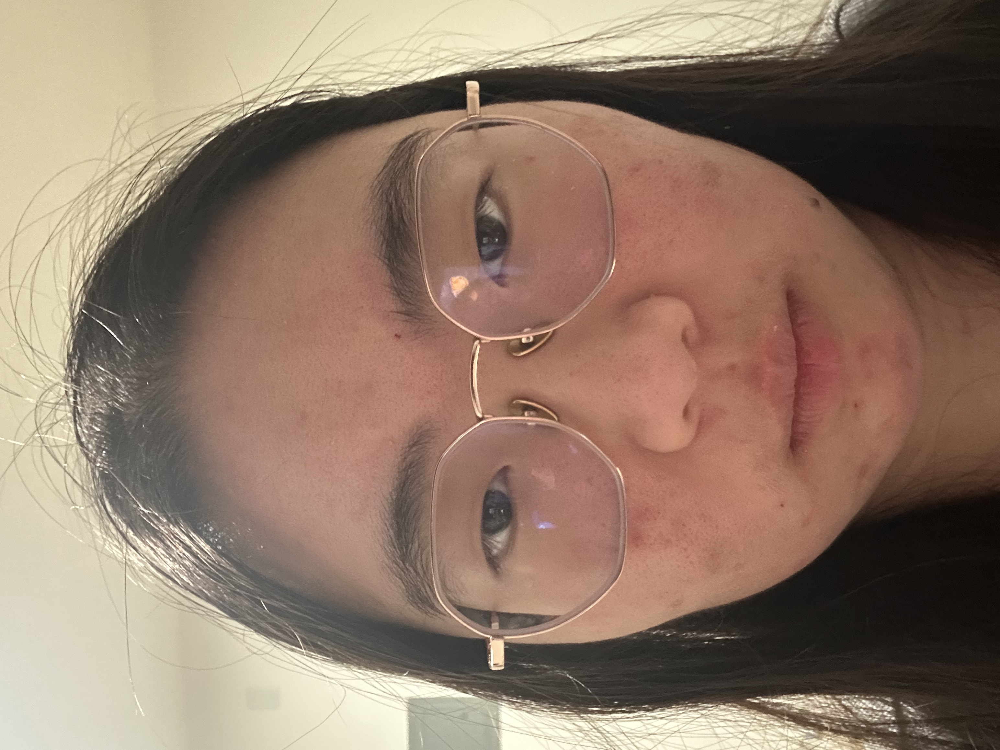
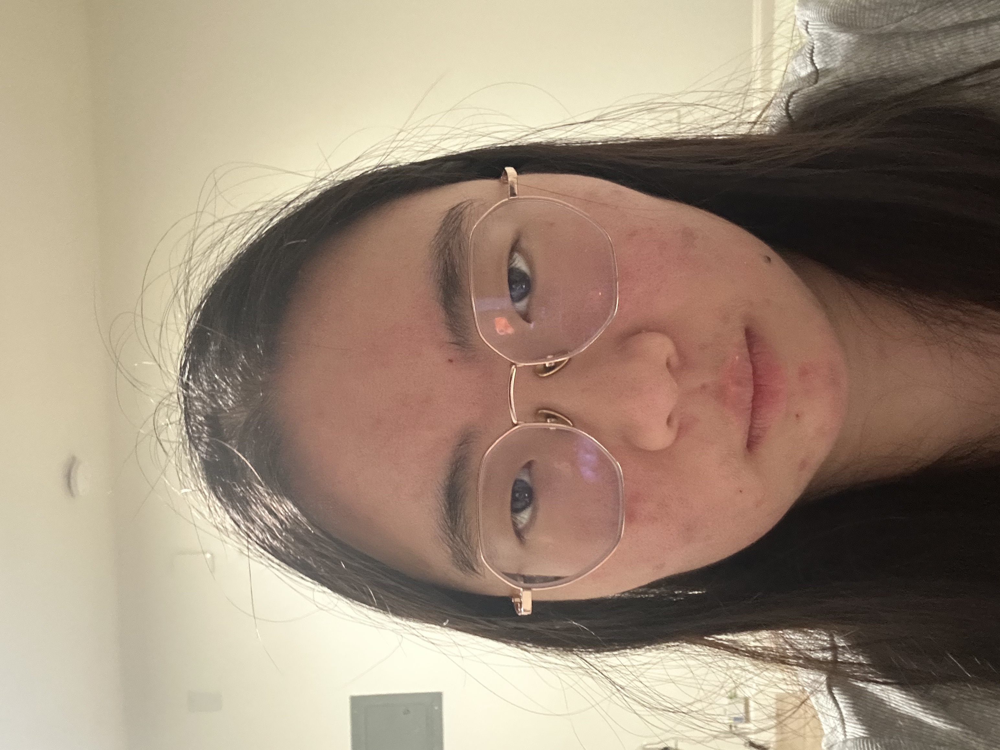
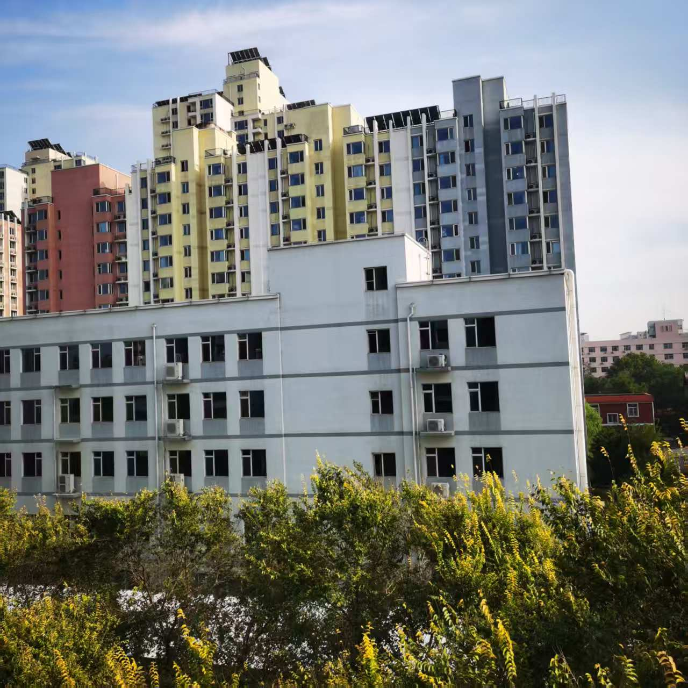
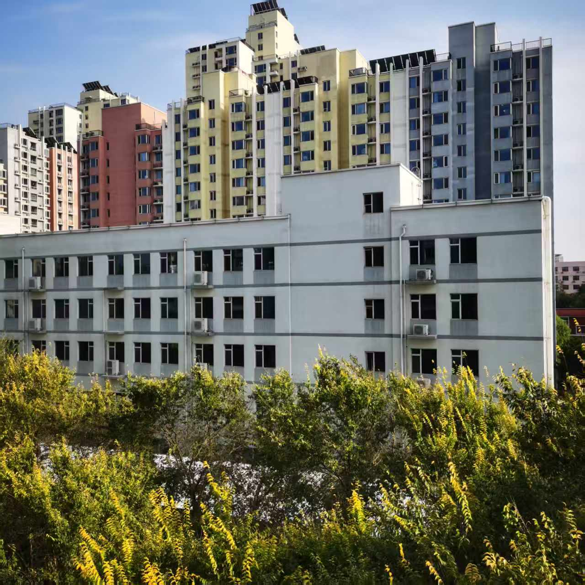
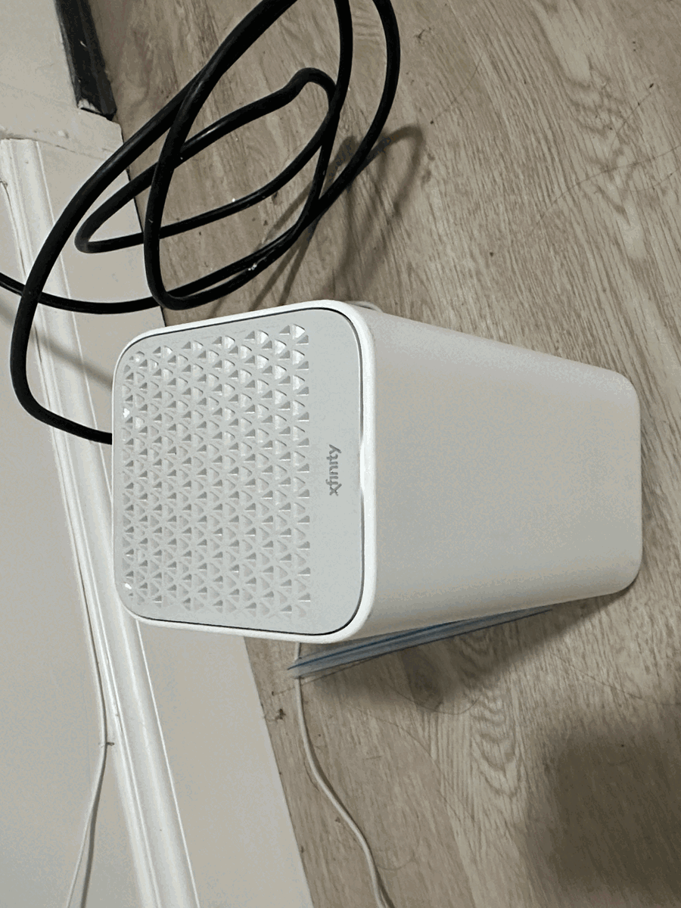
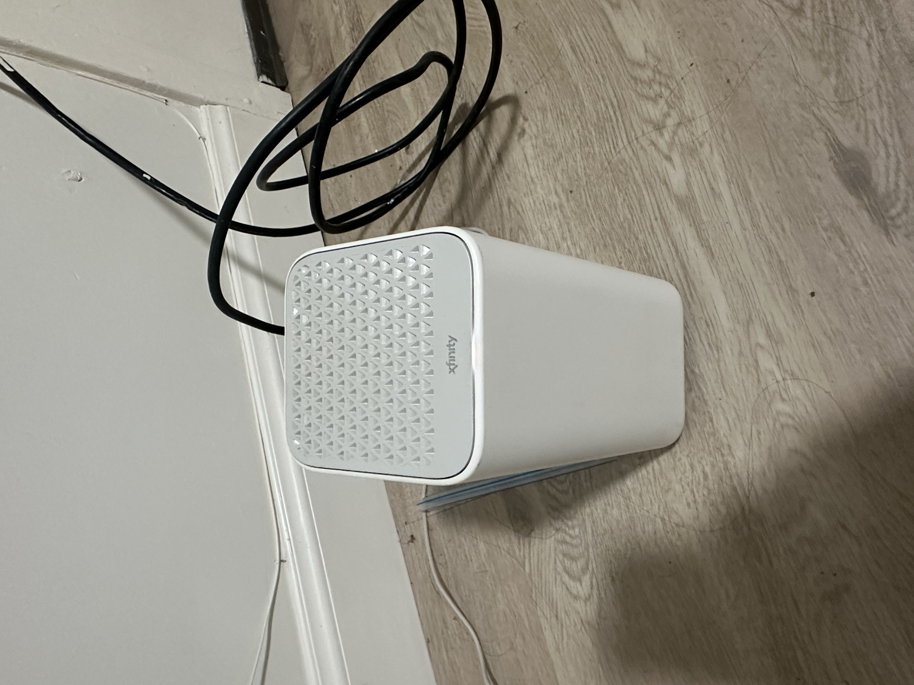
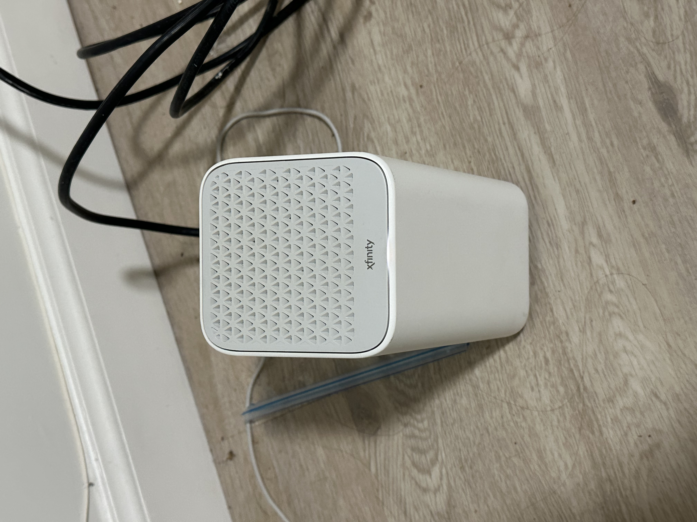
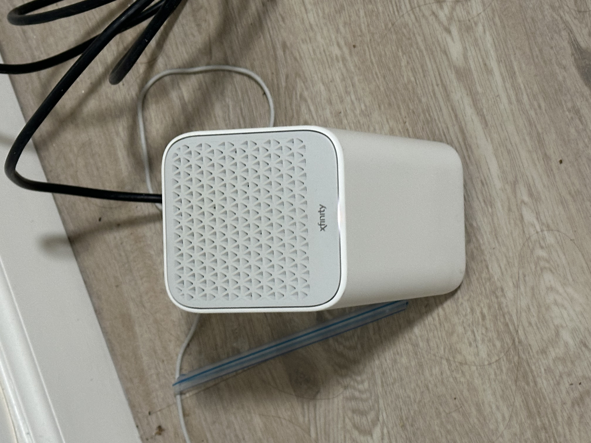
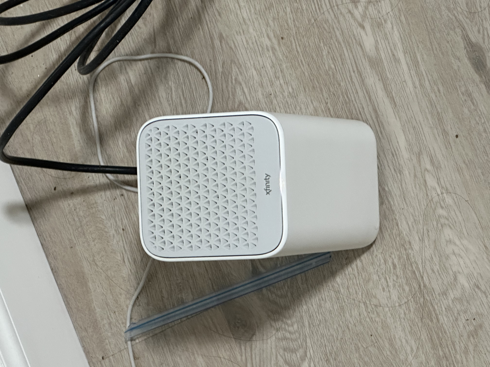
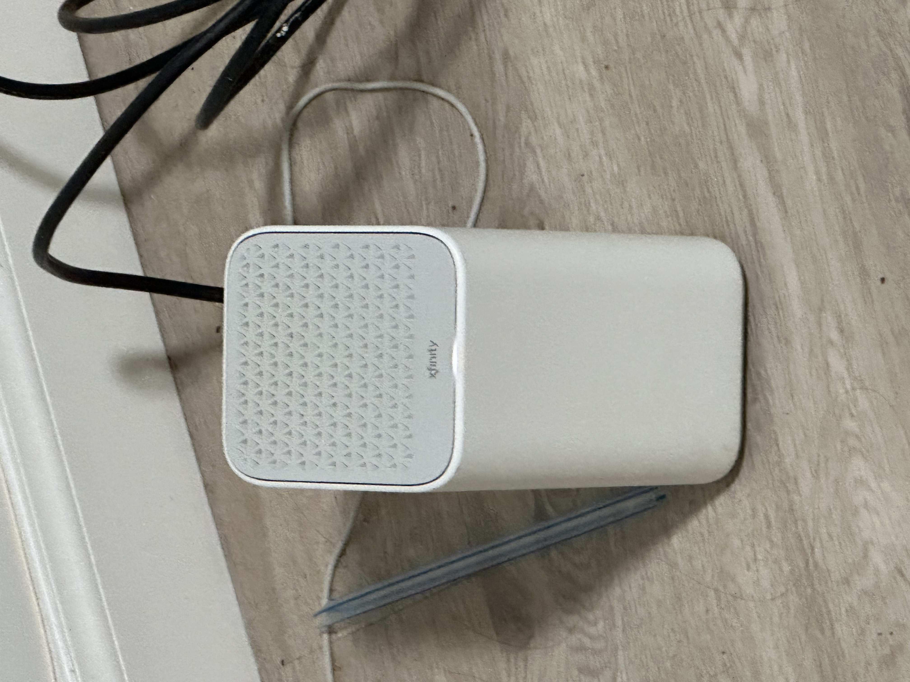

CS180 Project 0
Camera Perspective
In this project, I took a few photo pairs to see how distance and zoom change perspective.
Overview
Overview
The main thing I noticed is that zoom and moving the camera are not the same. Zoom changes the size of the image, but moving the camera changes the perspective.
Part 1
Selfie: The Wrong Way vs. The Right Way


What Changed?
In the first photo, the camera is too close, so the closest parts of the face look bigger. In the second photo, the camera is farther away, so the face proportions look more normal.
Part 2
Architectural Perspective Compression


Why Does the Zoomed View Look Flatter?
The zoomed photo looks flatter because it was taken from farther away. When I moved closer, the nearby parts became larger compared with the background, so the perspective looked stronger.
Part 3
The Dolly Zoom

Shooting Process
I took several photos of the router while moving the camera and changing zoom. The subject stays roughly the same size, but the background changes, which makes a simple dolly zoom effect.





Reflection
What I Learned
Overall, I learned that camera position controls perspective. Zoom can make the subject bigger or smaller, but moving closer or farther away changes the shape and depth of the scene.